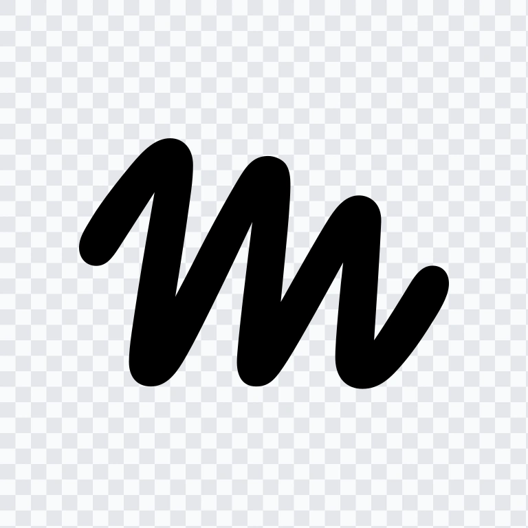

Chat del equipo con Muse
Toca tu nombre para abrir tu chat con Muse. Escribe lo que necesites, como un mensaje normal, y Muse te responde aquí mismo. Los chats se quedan guardados.
Cargando chats…
Chat del equipo NVISION

Toca tu nombre para abrir tu chat con Muse. Escribe lo que necesites, como un mensaje normal, y Muse te responde aquí mismo. Los chats se quedan guardados.
Cargando chats…